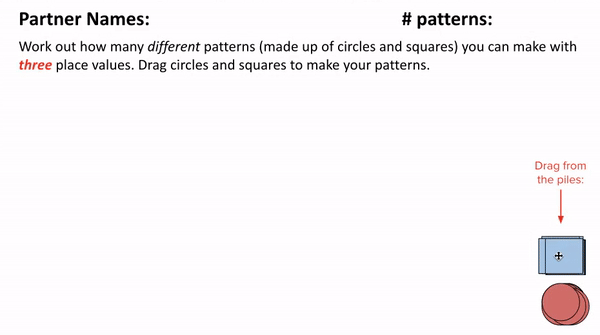
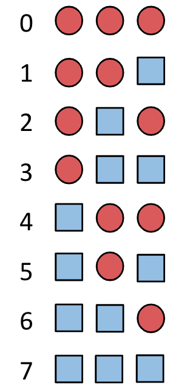
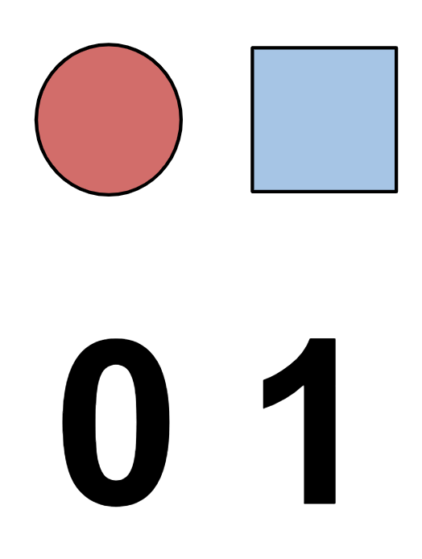
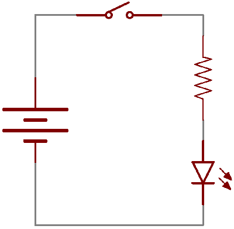

Lesson 2 - Circle Squares and Binary Numbers
At the end of this lesson, you will be able to:
- Create a number system using only circles and squares.
- Explain how computers store information as 0's and 1's.
Prompt
Let’s say I want to buy 7 items. How many ways can you represent the quantity 7?
Show Solution
There are lots of different ways! For example, I could use 7 tally marks, or hold up 7 fingers, or use the Roman numeral VII.
Circle square patterns
What if you could only represent quantities with circles and squares? Open this Google Slide Deck for your workspace and figure out how many different patterns you can make with only circles and squares using 3 place values. Follow the directions in the slide deck. You will be writing down the "rules" you developed to create your patterns.

Discussion prompt
 Complete on your own!
Complete on your own!
Congratulations! You just invented your own number system! Open Unit 1 Lesson 2 - Circle Square Patterns and:
- Post a link to your Google Slide Deck - remember to change the share settings to "Anyone with the link can view"
- Explain how counting in this circle and square system is similar to how we count in our regular lives. How is it different?
When you have submitted your post, you will be able to open and look at the rules for other student posts. Reply to their posts and talk about:
- Are their rules the same as yours?
- Why or why not?
Mapping patterns to quantities
Above, you developed a number system using only circles and squares. With 3 place values, you came up with 8 different patterns. We could map quantities to each of those patterns as in the figure below. When I want to express the number 2, I could use the pattern circle-square-circle. Notice how the quantities start at 0, this is how computer scientists count! So with 3 place values you can count eight different things - but the largest quantity you can actually name is 7, not 8, precisely because you started at 0. That little gap between "how many patterns" and "how high they count" comes back in the next lesson.

Using only circles and squares we developed "rules" to help us count. We have two shapes, the first is a circle, the second is a square. As we iterate through the shapes, we start with a circle, then the next quantity is a square. Examine figure 1.3 above to see how to "count" using circles and squares. Each time we move from a square back to a circle, the place value to the left also needs to go to the next figure.
Decimal numbers
Number systems help us express and reason about quantities. Early number systems were merely a system of tallies that allowed humans to record and perform simple arithmetic with values. The number system we use today uses the concept of place value to allow us to express any value we wish by combining only 10 symbols - these are just shapes! We, therefore, call it a “base 10” number system.
Like the "rules" for circles and squares, we count starting at shape "0", and when we get to shape "9", we go back to "0", but the place value to the left needs to go to its next shape!
0, 1, 2, 3, 4, 5, 6, 7, 8, 9 -> go back to 0, but the next place value increments to 10.
Binary numbers
So where is this heading? Binary! The binary number system uses 2 shapes, 0's and 1's, just like circles and squares. Instead of the shape "circle", we will use the shape "0" and instead of "square" we will use "1".

Language of the computer
Binary is the language of the computer! Binary means “two states”. The two states are sometimes called “1” and “0”, or called “true” and “false”, or called “on” and “off”. The essential characteristic is that a single binary device can be in just one of two possible states.
A good example is a toggle switch, such as a light switch. You can turn it on or off but not (in normal operation) anything else. A light switch holds one bit of information.

Computers can hold the state of electricity as a bit - either 1 (on) or 0 (off), like a toggle switch. Tiny on/off switches are easy, cheap, and reliable to make, and millions of them make up the circuits that fit into the small area of a silicon chip in a computer.
It may be hard to imagine, but we can represent numbers, text, sounds, and images with just these “on” and “off” switches.
Circuits
Before we look at how information is stored as binary signals (on or off), let’s look at how a circuit works!
In the next lesson, you will learn how to convert decimal numbers to binary!